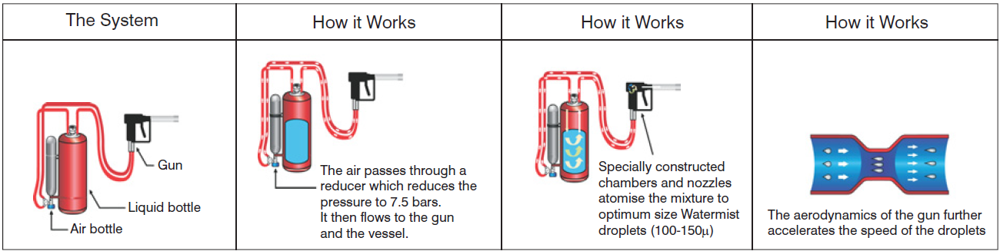

Technical Features:
| Media volume | 9 litres |
| Working pressure at gun | Approx 5 bar |
| Weights kg | Empty without air cylinder approx. 13.7 kg. |
| Standard air cylinder | 2L/300 bar carbon composite approx. 2.1 kg. Large air cylinder 4.7L/ 300 bar carbon composite approx 4.0 kg. Gun approx 1.9 kg. |
| Functional temperature range | +5 degrees C to +60 degrees C Depending on media |
| Extinguishing media flow | Approx. 0.23 l/sec |
| WindShield | 2mm thick FRP |
| Leg Guard | 25mm dia 16 guage nickel plated steel pipe |
| Siren / Hooter | 12V 30 Amp audible at a distance of 200m |
| Blinking Lights (2 Nos.) | 12V 20W each red lights with flasher |
| First Aid Box | Cotton absorbant 100g, Band Aid 10 pcs, Burnol 2 pcs, Tincture Iodine 100 ml |
| Escape Gear | Gel Blanket |
Portable. But Powerful
A fire can start anywhere, at anytime. And in just 6 minutes, it can turn into an uncontrollable blaze. This makes it even more important for you to tackle the fire, before it's too late.
Unfortunately, tiny lanes, inaccessible roads and traffic jams all are a setback when it comes to rushing to the rescue. Which means that by the time the fire engine reaches the scene of the fire, it could very possibly already be too late.
The need of the hour is a fire engine that can manoeuvre any road, zip through traffic and reach the burning premises in minutes.
Ceasefire introduces a state-of-the-art extinguisher on wheels - The Mobile Firefighter. Powered by the world's most revolutionary firefighting technology: Watermist.
Watermist Technology and How it Works
Ceasefire's patented Watermist technology uses the world's oldest, most effective fire suppressant - water, increasing its power many times over.
Here's how. Ceasefire extinguishers equipped with Watermist break water down into a fine mist. This mist is then thrown at the fire with a great kinetic force, covering a large surface area. As soon as the mist comes in contact with the fire, it instantly turns into steam. Enveloping the flames, cutting down the oxygen supply and reducing the temperature to below combustion levels. Ensuring that even the largest fire succumbs to Watermist technology. In minutes.
